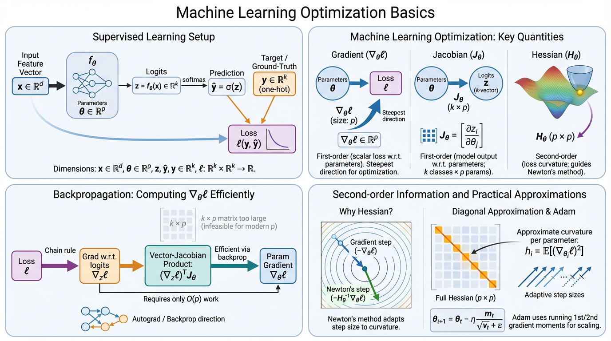

Machine Learning Optimization Basics
Optimization is at the core of modern machine learning. Training a neural network typically involves minimizing a loss function using gradient-based optimization methods such as stochastic gradient descent or Adam. In this post, let’s review the basic mathematical objects behind these algorithms: gradients, Jacobians and Hessians.

Generated by FigureLabs, prompted by this post.
Consider a model \(f_\theta\) trained via supervised learning to classify inputs \(x\) into \(k\) classes. The model produces logits \(z = f_\theta(x) \in \mathbb{R}^k\), which are converted into predicted class probabilities via the softmax function: \(\hat{y} = \sigma(z) \in \mathbb{R}^k\). The ground-truth label is represented as a one-hot vector \(y\). Training finds parameters that minimize a loss between predicted and ground-truth labels over a dataset: \(\theta^* = \arg\min_{\theta} \sum_{n=1}^{N} \ell(y_n, \hat{y}_n)\).
Dimensions:
- \(x \in \mathbb{R}^{d}\)
- \(\theta \in \mathbb{R}^{p}\)
- \(z, \hat{y}, y \in \mathbb{R}^k\)
- \(\ell: \mathbb{R}^k \times \mathbb{R}^k \to \mathbb{R}\)
Solving the optimization requires understanding how the loss and model outputs change as parameters move through \(\mathbb{R}^p\). Three mathematical objects characterize this:
- the Gradient \(\nabla_\theta \ell \in \mathbb{R}^p\) (first-order change of the (scalar) loss w.r.t. (vector) \(\theta\))
- the Jacobian \(J_\theta \in \mathbb{R}^{k \times p}\) (first-order change of the (vector) logits w.r.t. (vector) \(\theta\))
- the Hessian \(H_\theta \in \mathbb{R}^{p \times p}\) (second-order change of the (scalar) loss w.r.t. (vector) \(\theta\))
Gradient
The gradient \(\nabla_\theta \ell(y, f_\theta(x)) \in \mathbb{R}^p\) measures how the loss changes with each parameter. It points in the direction of steepest increase of the loss. Gradient descent steps in the opposite direction: \(\theta_{t+1} = \theta_t - \eta \, \nabla_\theta \ell(y, f_\theta(x))\), where \(\eta\) is the learning rate.
Jacobian
The Jacobian \(J_\theta = \frac{\partial f_\theta(x)}{\partial \theta} \in \mathbb{R}^{k \times p}\) captures how each output logit \(z_i\) changes with each parameter:
\[J_\theta = \begin{bmatrix} \frac{\partial z_1}{\partial \theta_1} & \cdots & \frac{\partial z_1}{\partial \theta_p} \\ \vdots & \ddots & \vdots \\ \frac{\partial z_k}{\partial \theta_1} & \cdots & \frac{\partial z_k}{\partial \theta_p} \end{bmatrix}\]
Its \(i\)-th row is \(\frac{\partial z_i}{\partial \theta} \in \mathbb{R}^p\), describing the sensitivity of class \(i\) to all parameters.
Hessian
The Hessian \(H_\theta = \nabla_\theta^2 \ell \in \mathbb{R}^{p \times p}\) measures the curvature of the loss landscape:
\[H_\theta = \begin{bmatrix} \frac{\partial^2 \ell}{\partial \theta_1^2} & \cdots & \frac{\partial^2 \ell}{\partial \theta_1 \partial \theta_p} \\ \vdots & \ddots & \vdots \\ \frac{\partial^2 \ell}{\partial \theta_p \partial \theta_1} & \cdots & \frac{\partial^2 \ell}{\partial \theta_p^2} \end{bmatrix}\]
Large eigenvalues of \(H_\theta\) indicate sharp curvature, while small eigenvalues indicate flat directions. Computing the full Hessian is usually infeasible for modern networks due to its \(p \times p\) size.
Gradient descent requires \(\nabla_\theta \ell(y, f_\theta(x)) \in \mathbb{R}^p\), the gradient of the scalar loss w.r.t. model parameters. By the chain rule, this is a vector-Jacobian product (VJP): \(\nabla_\theta \ell = \frac{\partial \ell}{\partial \theta} = \frac{\partial \ell}{\partial z} \frac{\partial z}{\partial \theta} = (\nabla_z \ell)^T J_\theta\) where \(\nabla_z \ell \in \mathbb{R}^k\) is the gradient of the loss w.r.t. the logits, and \(J_\theta \in \mathbb{R}^{k \times p}\) is the Jacobian of the logits w.r.t. the parameters.
Backpropagation computes this VJP efficiently by traversing the computation graph in reverse, accumulating gradients layer by layer without ever materializing \(J_\theta\). This costs \(O(p)\) and is achieved in a single backward pass, the same order as the forward pass.
The naive alternative would be to form \(J_\theta\) explicitly row by row and then multiply. This requires \(k\) backward passes at \(O(kp)\) compute, and storing the full \(k \times p\) matrix in memory. For modern networks where \(p\) can be in the billions, both the \(k\times\) compute overhead and the \(k \times p\) memory cost make explicit Jacobian materialization infeasible.
Why the Hessian matters
Vanilla gradient descent uses the same learning rate for every parameter: \(\theta_{t+1} = \theta_t - \eta \, \nabla_\theta \ell\). However, different directions in parameter space may have very different curvature. Ideally we would account for this using Newton’s method (see Appendix A): \(\theta_{t+1} = \theta_t - H_\theta^{-1} \nabla_\theta \ell\). Here the inverse Hessian rescales the gradient: steps are larger in flat directions and smaller in steep ones. Unfortunately the Hessian \(H_\theta \in \mathbb{R}^{p\times p}\) is far too large to compute or invert for modern neural networks.
Diagonal curvature approximation
A common simplification is to approximate only the diagonal of the Hessian. This gives a per-parameter learning rate: \(\theta_{t+1,i} = \theta_{t,i} - \eta \, \frac{\nabla_{\theta_i}\ell}{\sqrt{h_i}}\), where \(h_i\) estimates the curvature of parameter \(i\). For likelihood-based losses, the diagonal of the expected Hessian can be approximated using squared gradients (see Appendix B): \(\text{diag}(\mathbb{E}[H_\theta]) \approx \mathbb{E}[(\nabla_\theta \ell)^2]\). This makes curvature estimation possible using gradients alone!
Adam
Adam maintains running estimates of the first and second moments of the gradient: \(m_t = \beta_1 m_{t-1} + (1-\beta_1)\nabla_\theta \ell\), \(v_t = \beta_2 v_{t-1} + (1-\beta_2)(\nabla_\theta \ell)^2\) and updates parameters as \(\theta_{t+1} = \theta_t - \eta \frac{m_t}{\sqrt{v_t}+\epsilon}\). The denominator \(\sqrt{v_t}\) acts as a diagonal curvature estimate, scaling each parameter’s update according to its historical gradient magnitude.
The motivation for Newton’s update comes from minimizing a local quadratic approximation of the loss. Expanding \(\ell(\theta)\) around \(\theta_t\) via a second-order Taylor expansion: \(\ell(\theta) \approx \ell(\theta_t) + \nabla_\theta \ell^\top (\theta - \theta_t) + \frac{1}{2}(\theta - \theta_t)^\top H_\theta (\theta - \theta_t)\). Setting the derivative of this quadratic w.r.t. \(\theta\) to zero: \(\nabla_\theta \ell + H_\theta (\theta - \theta_t) = 0 \implies \theta = \theta_t - H_\theta^{-1} \nabla_\theta \ell\). Thus, Newton’s update finds the exact minimum of the local quadratic approximation in one step, rather than just following the gradient with a fixed step size.
For likelihood-based models, curvature can be approximated with squared gradients! Starting from the normalization condition, \(\int p(y|x,\theta)\, dy = 1\), and differentiating twice w.r.t. \(\theta\) (using the log-derivative trick \(\nabla_\theta p = p\,\nabla_\theta \log p\) at each step) yields: \(\mathbb{E}[\nabla_\theta^2 \log p] = - \mathbb{E}\left[(\nabla_\theta \log p)(\nabla_\theta \log p)^\top\right]\). If the training loss is the negative log-likelihood \(\ell = -\log p(y|x,\theta)\). Thus, \(\mathbb{E}[H_\theta] = \mathbb{E}\left[(\nabla_\theta \ell)(\nabla_\theta \ell)^\top\right]\). Taking the diagonal: \(\text{diag}(\mathbb{E}[H_\theta]) = \mathbb{E}[(\nabla_\theta \ell)^2]\). Thus, the expected squared gradient per parameter provides a practical estimate of the diagonal curvature.
Caveats
- Exact only for negative log-likelihood losses.
- Uses the expected Hessian, not the local Hessian.
- Captures only diagonal curvature.